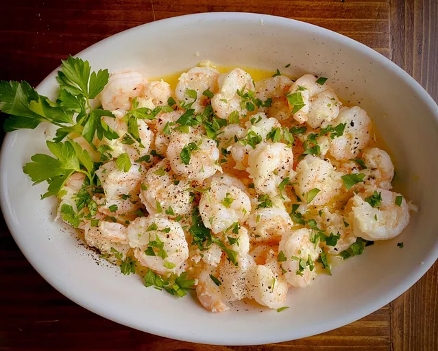

Garlic Shrimp

Description
This garlic shrimp is the perfect weeknight meal for busy families.
It's quick, easy, and loaded with buttery garlic flavor.
Serve over cauliflower rice.
Ingredients
- 1/4 cup butter, divided
- 2 tablespoons chopped garlic
- 1 pound shrimp, peeled and deveined
- 1 tablespoon seafood seasoning
- 1 tablespoon chopped parsley, or to taste (optional)
- 1 lemon, cut into wedges, or as needed (optional)
Steps
- Heat 3 tablespoons butter in a cast iron skillet. Add garlic and cook until fragrant, about 30 seconds.
- Toss shrimp with seafood seasoning and place in the skillet. Cook shrimp until pink and opaque, 2 to 3 minutes on each side.
- Add 1 tablespoon butter and remove from heat. Garnish with chopped parsley and lemon wedges.